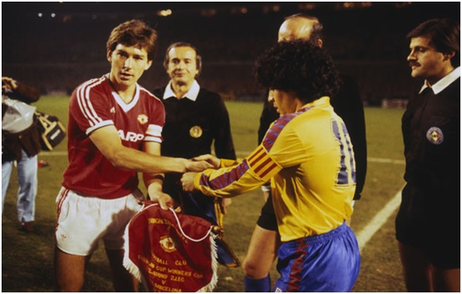
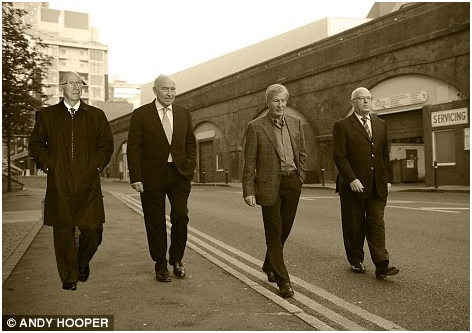

Chương 22

hong độ phập phù, United của Atkinson không có hy vọng tại giải Hạng Nhất, nhưng với nhiều ngôi sao trong đội hình, họ rất thành công trong các giải cúp theo thể thức loại trực tiếp. Mùa 1982-1983, CLB giành quyền vào chung kết cả Cúp Liên Đoàn lẫn Cúp FA. Chung kết Cúp Liên Đoàn vào tháng ba gặp Liverpool, Norman Whiteside sút căng như kẻ chỉ, mở tỷ số cho United từ rất sớm. Thủ môn Gary Bailey mắc sai lầm, giúp Kennedy gỡ hòavào phút 75. Liverpool ghi thêm một bàn trong hiệp phụ, giành chiến thắng chung cuộc.
Hai tháng sau, United dễ thở hơn ở Cúp FA, do đối thủ chỉ là Brighton. Tuy vậy, đội bị một phen hú vía. Brighton quân bình tỷ số 2-2 vào phút 87, sau đó có cơ hội ngàn vàng đúng phút 90. May mà Bailey kịp lập công chuộc tội, phản xạ xuất thần,cứu CLB một bàn thua trông thấy. Trở về từ cõi chết, United thắng dễ đối phương 4-0 trong trận tái đấu, với các pha lập công của Robson (cú đúp), Whiteside và Muhren[1].
Trận thắng trên có sự trợ giúp từ…siêu nhiên. “Trước ngày thi đấu, ba tôi từ Nam Phi sang Anh”, Bailey thuật, “Ông già đưa tôi ổ khóa, và một cái chìa có gắn ruy băng hai màu đỏ trắng, bảo tôi bắt gôn bên nào thì lấy khóa khóa vào cầu môn bên đấy, giữa hai hiệp thì đổi lại. Tôi đáp: Ôi dào, vớ vẩn; nhưng cứ làm theo. Quả nhiên, khi trận đấu diễn ra, không bị lọt trái nào. Thế rồi tôi dùng lại cái khóa trong trận tranh Siêu Cúp với Liverpool, và trận chung kết gặp Everton năm 1985, cả hai trận đều giữ sạch lưới”.
Sau trận chung kết Cúp FA, trùm truyền thông Robert Maxwell ra giá 10 triệu bảng, muốn mua lại United từ Martin Edwards. CĐV Quỷ Đỏ lên chiến dịch phản đối, bởi Maxwell đang là chủ tịch của Oxford United, mới năm trước còn định sáp nhập Oxford với Reading. Ông ta mà mua được đội bóng thành Man, nhập chung vào Oxford thì truyền thống bao năm đi đời nhà ma! Edwards cũng phân vân, nên nâng giá lên 15 triệu. Maxwell chê đắt, chuyển qua mua Derby County.
Trong khi đó, United tiếp tục ghi dấu ấn tại một cúp khác. Ngày 21 tháng 3, 1984, tứ kết lượt về Cúp C2 Châu Âu, đội tiếp Barcelona tại Old Trafford. Barcelona đã thắng lượt đi 2-0, lại sở hữu hai thiên tài Diego Maradona và Bernd Schuster; lội ngược dòng trước họ tưởng như bất khả.Tuy thế, chẳng phải ngẫu nhiên người ta lại gọi Bryan Robson là Tuyệt Thế Thủ Quân. Robson đánh đầu phá lưới trong hiệp một, nâng tỷ số vào đầu hiệp hai, trước khi phát động đường tấn công dẫn đến bàn ấn định 3-0 của Stapleton. Ngay sáng hôm sau, dù đã có Platini, Boniek, Paolo Rossi…Juventus gọi đến Old Trafford hỏi mua Robson với giá ba triệu bảng, tức ngang với kỷ lục thế giới thiết lập năm 1982, khi Maradona chuyển từ Boca Juniors sang Barcelona.Tiếc rằng, như còn xảy ra nhiều lần sau đó, tỏa sáng xong, Robson liền chấn thương. Vắng anh, United thúc thủ trước chính Juventus ở bán kết.

Bryan Robson bắt tay Maradona trước trận tứ kết lượt về năm 1984 (Ảnh: Theguardian.com)
Từ 1984 đến khi rời Old Trafford, có vẻ như Ron Atkinson trở nên kém tinh tường trên thị trường chuyển nhượng. Ngoài Jesper Olsen và Gordon Strachan, các cầu thủ khác ông mua đều không đáng đồng tiền bát gạo, cụ thể như Alan Brazil, Terry Gibson, và Peter Davenport; cả ba giá đều đắt mà chẳng đóng góp được bao nhiêu. Về hướng ngược lại, Ron lớn lần lượt để mất Ray Wilkins vào tay AC Milan, và Mark Hughes vào tay Barcelona[2]. Đó là chưa nói đến chuyện ông không nhìn ra tài năng của hai cầu thủ trẻ Peter Beardsley và David Platt, để họ ra đi theo dạng tự do. Cả hai sau này đều trở thành trụ cột ĐTQG Anh.
Trước khi sang Barcelona, Mark Hughes còn giúp Atkinson giành thêm một danh hiệu. Mùa 1984-1985, anh lập công 24 lần tại các giải, là cầu thủ United đầu tiên kể từ George Best ghi hơn 20 bàn một mùa, được trao phần thưởng Cầu Thủ Trẻ Xuất Sắc Nhất Nước Anh[3]. Hughes và Robson hợp tấu, đưa Quỷ Đỏ lần nữa vượt qua Liverpool ở bán kết Cúp FA, đặt vé vào chung kết gặp Everton. Everton vừa đăng quang ngôi VĐQG, sau đó còn đoạt Cúp C2, song Cúp FA phải nhường về Manchester. Trong trận đấu ngày 18 tháng 5, 1985, bất chấp việc Kevin Moran bị thẻ đỏ, United thi đấu kiên cường, giữ vững tỷ số 0-0 sau 90 phút. Phút thứ 5, hiệp phụ thứ hai, Norman Whiteside dốc bóng nhanh bên cánh phải, đảo chân như hậu bối Cristiano Ronaldo nhiều năm về sau, làm hoa mắt hậu vệ đối phương, rồi sút căng tung lưới, ghi bàn thắng duy nhất. Lưới vừa rung, đồng đội John Gidman chạy đến ôm chầm Whiteside, mắng yêu: “Norman ơi, không có cả trăm ngàn người ở đây thì tao đ. mày ngay!”
Không thể chấm dứt cơn khô hạn danh hiệu ở giải VĐQG, nhưng mùa nào, Atkinson cũng đưa United vào Top 4. Thêm nữa, thành tích cao tại các cúp giúp ông giữ được ghế HLV. Tuy nhiên, sang mùa 1986-1987, vận may không còn đứng về phía Ron lớn. Quỷ Đỏ khởi đầu rất tệ. Ngày 1 tháng 11, 1986, nguy cơ xuống hạng hiển hiện, khi đội chỉ kiếm được trận hòa với Coventry trên sân nhà, rơi xuống thứ 19 trên bảng tổng sắp. Ba ngày sau, họ bị Southampton hạ nhục 4-1 tại Cúp Liên Đoàn. Martin Edwards họp cùng BLĐ, bàn chuyện sa thải Atkinson, và cân nhắc xem nên mời Alex Ferguson hay Terry Venables. Mọi người nhanh chóng thống nhất cái tên Ferguson.
Terry Venables đang rất thành công với Barcelona, dẫn dắt đội giành cả chức vô địch La Liga lẫn Cúp Nhà Vua. Song Barcelona là đội bóng lớn, đoạt cúp không có gì lạ. Thành tích của Alex Ferguson ấn tượng hơn, vì ông làm nên phép màu ở Aberdeen, đưa CLB nhỏ bé này phá thế thống trị Scotland của Rangers và Celtic, thậm chí đăng quang tại Cúp C2 Châu Âu. Martin Edwards bắt đầu để ý tới Ferguson từ 1983. Bobby Charlton, bấy giờ đã là thành viên BLĐ United, cũng rất quan tâm tới vị HLV người Scotland. Hè 1986, nhân dịp đến Mexico xem World Cup, Charlton từng gặp gỡ Ferguson, dò ý ông về việc đến Old Trafford trong tương lai.
Hồi 1981, sa thải Dave Sexton xong, United mới đi tìm người thay thế, ê mặt khi bị McMenemy, Robson và Saunders từ chối liên tiếp. Rút kinh nghiệm, lần này họ quyết định đàm phán ngầm với Alex Ferguson trước, sau đó mới sa thải Atkinson và chính thức ngỏ lời cùng Aberdeen. Toàn thể BLĐ United: Martin Edwards, Bobby Charlton, Maurice Watkins và Mike Edelson bí mật tới Glasgow, gặp gỡ Ferguson. Trong buổi họp, mức lương United mời chào Ferguson thấp hơn lương ông đang hưởng ở Aberdeen. Tuy vậy, Fergie vẫn đồng ý. United đang là một người khổng lồ ngủ quên, và Ferguson tự tin mình sẽ đánh thức thành công người khổng lồ ấy.
“Với Ron, năm nào đội cũng nằm trong Top 4”, Edwards nhận xét, “Nhưng hạng tư ngày xưa đâu giống như hạng tư bây giờ. Như thế là chưa đủ. Hơn nữa, trong mùa cuối, CLB còn đi lùi. Chúng tôi đều cảm thấy đã đến lúc chia tay ông ta”.
Bị mất chức, Atkinson không buồn gì. Sau mùa 1985-1986 trắng tay, ông đã xin từ nhiệm mà không được, nay người ta đuổi thì cứ thế mà đi thôi. Nhận tin sa thải xong, Ron lớn…mở tiệc, chiêu đãi học trò lần cuối.
“Mở tiệc ngay trong ngày bị sa thải, trên đời chắc chỉ có thầy Ron”, Norman Whiteside cười, “Ai cũng kéo tới nhà thầy ấy. Sáng hôm sau, Fergie đến, gặp mặt cầu thủ lần đầu. Tôi và Paul (McGrath) vẫn còn “phê”, chả hiểu ổng nói gì!”
Ra đi, nhưng Atkinson luôn tự hào về những năm tháng ở Old Trafford. “Dưới thời tôi, United luôn nằm trong nhóm cạnh tranh danh hiệu, lúc trước đâu được vậy”, ông nói, “Nên nhớ rằng trong năm năm tôi dẫn dắt đội, có đến bốn lần nhà vô địch Anh sau đó trở thành vô địch châu Âu: Forest này, Villa này, và Liverpool hai lần. Everton cũng mạnh nữa. Chúng tôi phải đương đầu cũng những đội “khủng” như thế đó. Nhưng mà tôi yêu khoảng thời gian đấy.”
“Người ta hay hỏi tôi có bị áp lực gì không”, Atkinson tiếp, “Tôi nói thế này nhé: Trước khi đá banh, tôi từng làm công nhân. Công nhân thì không có xe mà đi, không có đồ thể thao mà mặc, không có chuyện mười giờ mới đi làm. Anh phải đến sở từ tám giờ. Mỗi ngày, ngoài nửa tiếng nghỉ ăn trưa, phải nai lưng mà quai búa, mỗi khi thấy bọn văn phòng đi xuống kiểm tra, càng phải hùng hục mà làm. Đấy mới là nặng nhọc, là áp lực. Chứ huấn luyện Man U áp lực nỗi gì!”

Bốn vị lãnh đạo United (từ trái sang): Charlton, Watkins, Edwards và Edelson (Ảnh: Dailymail.co.uk)
Chú thích:
[1] Với bàn thắng trong hai trận trên, Whiteside trở thành cầu thủ trẻ nhất ghi bàn ở chung kết các Cúp Liên Đoàn và FA.
[2] Tuy đã là trụ cột, Hughes vẫn lãnh mức lương thấp như hồi mới lên đội một, xin tăng không được. “Atkinson mà trả lương cho tôi bằng với các cầu thủ khác trong đội hình chính thì tôi đâu có đi làm gì”, anh thổ lộ.
[3] Trước 1975, ở Anh chỉ có giải thưởng của Hiệp Hội Ký Giả (FWA). Từ 1975, Hiệp Hội Cầu Thủ (PFA: Professional Footballers’ Association) cũng đặt ra hai giải thưởng: Cầu Thủ Xuất Sắc Nhất Nước Anh, và Cầu Thủ Trẻ Xuất Sắc Nhất.